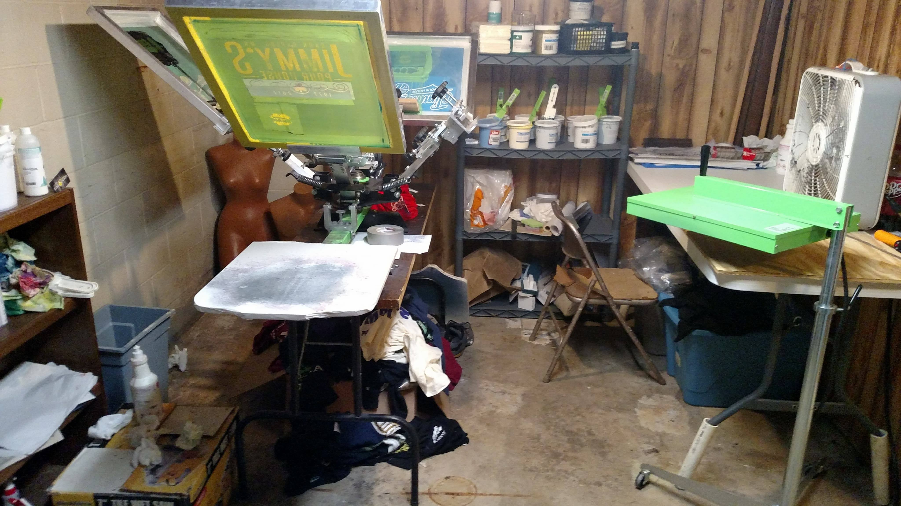

Layout Shifter
Screen printing is defined as "to force ink or metal onto (a surface) through a prepared screen of fine material so as to create a picture or pattern."
Screenprinting seems like an easy process. Make the stencil, slap some ink on it, and poof! There it is. However, a lot more goes into printing that it seems. From making the screens, to knowing your inks, to knowing how materials react with inks and heat.
Each color in your design must be put on a different screen, because the seperation is different for each one. They must then be carefully aligned so they come out straight, and there are no unintentional gaps between colors. The more screens, the more difficult the process becomes.
